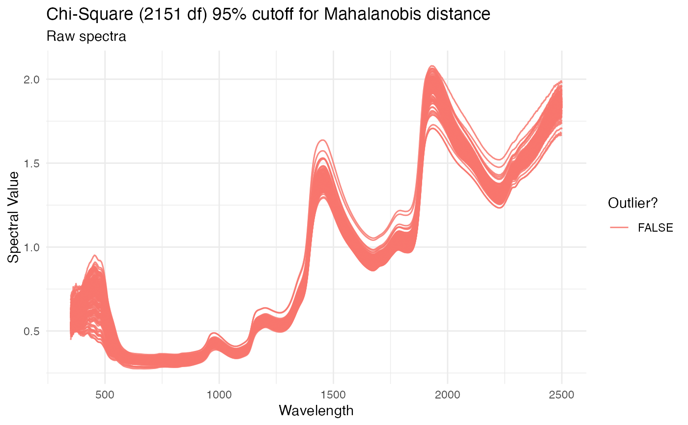

Plot spectral data, highlighting outliers as identified using Mahalanobis distance
Source:R/plot_spectra.R
plot_spectra.RdGenerates a ggplot object of given
spectra, with wavelength on the x axis and given spectral values on the y.
Mahalanobis distance is used to calculate outliers, which are both
identified on the plot. Rows from the original dataframe are printed to the
console for each outlier that is identified.
Usage
plot_spectra(
df,
num.col.before.spectra = 1,
window.size = 10,
detect.outliers = TRUE,
color = NULL,
alternate.title = "",
verbose = TRUE,
wavelengths = lifecycle::deprecated()
)Arguments
- df
data.frameobject containing columns of spectra. Spectral columns must be labeled with an "X" and then the wavelength (example: "X740" = 740nm). Left-most column must be unique ID. May also contain columns of metadata between the unique ID and spectral columns. Cannot contain any missing values. Metadata column names may not start with "X".- num.col.before.spectra
Number of columns to the left of the spectral matrix (including unique ID). Default is 1.
- window.size
number defining the size of window to use when calculating the covariance of the spectra (required to calculate Mahalanobis distance). Default is 10.
- detect.outliers
Boolean indicating whether spectra should be filtered before plotting. If
TRUE, outliers are indicated by color in the resulting plot. Ifverboseis also set toTRUE, outlier metadata will be printed to the console. Default isTRUE.- color
String or vector of strings indicating colors to be passed to
ggplot. Default is defaultggplotcolors.- alternate.title
String to be used as plot title. If
detect.outliersisTRUE, a descriptive title will be supplied. Ifdetect.outliersisFALSE, default is no title will be used.- verbose
If
TRUE, the number of rows removed through filtering will be printed to the console. Default isTRUE.- wavelengths
DEPRECATED
wavelengthsis no longer supported; this information is now inferred fromdfcolumn names
Value
If verbose, prints unique ID and metadata for rows identified as outliers. Returns plot of spectral data with non-outliers in blue and outliers in red. X-axis is wavelengths and y-axis is spectral values.
Author
Jenna Hershberger jmh579@cornell.edu
Examples
# \donttest{
library(magrittr)
ikeogu.2017 %>%
dplyr::rename(unique.id = sample.id) %>%
dplyr::select(unique.id, dplyr::everything(), -TCC) %>%
na.omit() %>%
plot_spectra(
df = .,
num.col.before.spectra = 5,
window.size = 15,
detect.outliers = TRUE,
color = NULL,
alternate.title = NULL,
verbose = TRUE
)
#> No outliers detected.

# }